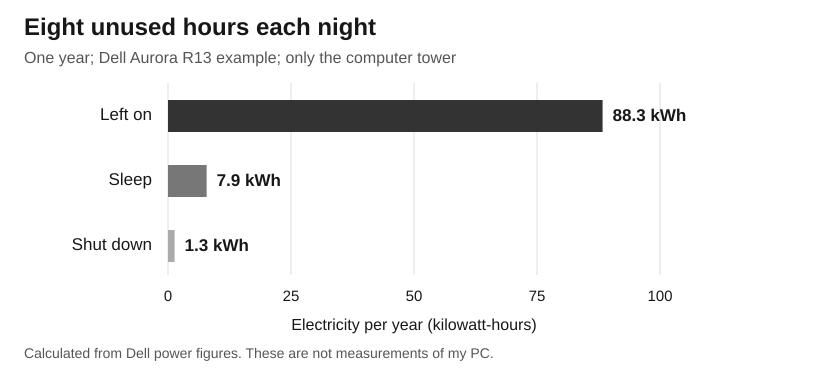

What does leaving a gaming PC on overnight cost?
In this example, sleep saves about $19.66 a year compared with leaving the PC on for eight unused hours each night. Shutting it down saves another $1.59. Most of the saving comes from getting it out of idle.
The example uses Dell's published Aurora R13 test figures and 2024 New York electricity data. It is not a test of my computer or an average for all gaming PCs.

| Overnight setting | Power | Cost / year | CO₂ / year |
|---|---|---|---|
| Left on, long idle | 30.25 W | $21.58 | 21.5 kg |
| Sleep | 2.69 W | $1.92 | 1.9 kg |
| Shut down, plugged in | 0.46 W | $0.33 | 0.3 kg |
Sleep cuts the modeled overnight electricity by 91%. The CO₂ estimate falls by about 19.6 kg a year. That is a rough estimate based on New York's average power generation, not a measured change at a power plant.
What if the computer uses more power?
| Idle power | Yearly saving from sleep |
|---|---|
| 30.25 W · Dell long idle | $19.66 |
| 47.50 W · Dell short idle | $31.97 |
| 100.00 W · assumed test | $69.42 |
| 150.00 W · assumed test | $105.08 |
These rows keep sleep at 2.69 W, eight hours a night, and the same price. A busier PC can have a much bigger cost. But if it is finishing useful work, those hours are not really unused.
Who gets the saving?
If you pay for each unit of power, sleep can lower the bill. If power is included in a dorm fee, your own bill may not change. The building still uses less electricity. The person choosing the setting and the person paying can be different.
For this test case, sleep gets most of the saving without buying a new PC. A full shutdown saves a little more, but may add waiting time or interrupt tasks. The size of that tradeoff depends on how you use the machine.
Inputs, sources, and how to repeat the work
Inputs
- Long idle 30.25 W, sleep 2.69 W, off 0.46 W: Dell's Aurora R13 datasheet, pp. 4–5, effective October 25, 2021. Tests used 230 V / 50 Hz. Hardware, software, and U.S. wall power can change the result. The 47.5 W short-idle row also comes from Dell. The 100 and 150 W rows are assumed tests.
- Eight hours each night, 365 nights: an assumed routine. No monitor, speakers, or other devices are included.
- $0.2443 per kWh: EIA's 2024 New York residential average. It is not a Rochester quote or a current bill rate. Use your own per-kWh charge to estimate bill savings; fixed fees do not disappear.
- 0.2436 kg CO₂ per kWh: converted from EIA's 537 lb/MWh for 2024 New York generation. It leaves out imported power, power-line losses, fuel supply, and PC production. It is not the emissions rate of the last plant turned on overnight.
The math
Yearly kWh = watts × hours each night × nights ÷ 1,000
Yearly cost = kWh × dollars per kWh
Estimated CO₂ = kWh × kg CO₂ per kWh
Saving from sleep = idle result − sleep result
Example: (30.25 − 2.69) × 8 × 365 ÷ 1,000
= 80.4752 kWh saved
× $0.2443 = $19.66 per year
Other assumptions matter too
| Change from the baseline | Money saved / year | CO₂ saved / year |
|---|---|---|
| Baseline: 8 hours | $19.66 | 19.6 kg |
| 4 hours each night | $9.83 | 9.8 kg |
| 12 hours each night | $29.49 | 29.4 kg |
| Electricity at $0.15/kWh | $12.07 | 19.6 kg |
| Electricity at $0.35/kWh | $28.17 | 19.6 kg |
| Grid at 0.05 kg CO2/kWh | $19.66 | 4.0 kg |
| Grid at 0.70 kg CO2/kWh | $19.66 | 56.3 kg |
The alternative prices and grid rates are sensitivity tests, not claims about named locations. Each row changes one input. This model holds the price and emissions rate constant for the whole year. To estimate the actual CO₂ avoided at night, we would need time-specific data on which power plants respond.
How AI was used
AI found Dell and EIA data, then calculated energy, cost, and CO₂ for the same unused hours in each mode. The checks used measured-mode figures rather than the power supply's maximum rating. The model was rerun with different hours, idle power, prices, and grid rates. It does not claim that all gaming PCs match Dell's test.
To try your own case, measure each mode with a plug-in meter. Use those watts in the formula or calculation code. Download the three-mode results and all sensitivity tests.
Sources
- Dell, Alienware Aurora R13 Product Compliance Datasheet, effective October 25, 2021, pp. 4–5: mode-specific watts and test limits.
- EIA, Electric Power Annual, Table 2.10: New York residential price, 2024 (24.43 cents/kWh).
- EIA, New York Electricity Profile 2024, Table 1: in-state generation CO₂ rate (537 lb/MWh).